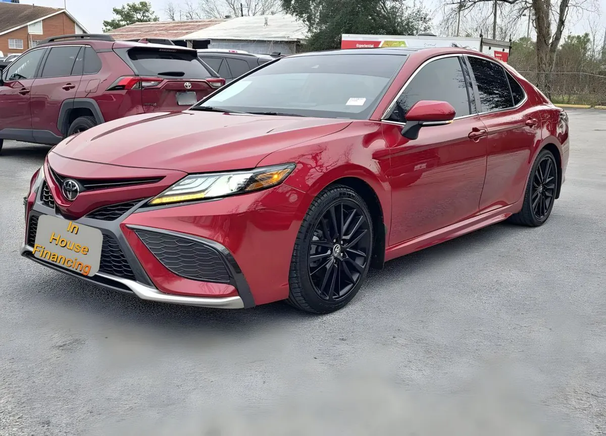

2022 Toyota Camry
Red • ID CCH-377

1/4General
| Year | 2022 |
|---|---|
| Make | Toyota |
| Model | Camry |
| Type | Sedan |
| Color | Red |
| Mileage | 48,000 miles |
| Drivetrain | To be confirmed |
Model specifications
| Engine | 2.5L I4; 3.5L V6; hybrid 2.5L — varies depending on unit |
|---|---|
| Horsepower | 203 (2.5L); 301 (V6); 208 (hybrid, netos) — varies depending on unit |
| Torque | 184 lb-ft (2.5L); 267 (V6) — varies depending on unit |
| Transmission | 8-speed automatic (ECVT in hybrid) |
| Model drivetrain | FWD (AWD available in engine 2.5L) |
| Fuel economy (MPG) | City: 28 (2.5L); 22 (V6) — varies depending on unit. Highway: 39 (2.5L); 32 (V6) — varies depending on unit |
| Fuel | Regular gasoline |
| Max towing | not especificado by the fabricante |
| Seats | 5 |
| Body style | sedan |
Typical figures for this year and model, taken from public sources (manufacturer, KBB, Edmunds). The dealer confirms the exact engine, drivetrain and equipment of this unit.
Great for
For everyday driving around town.
Year, mileage and features come from the inventory data; confirm this unit's exact details with the dealer. This sheet shows no prices: the dealer provides them in writing.